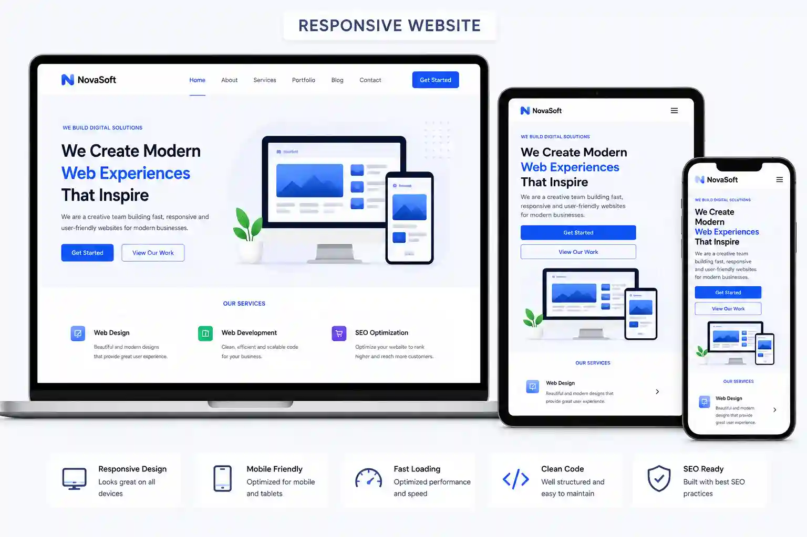

Responsive Websites

I can build responsive pages where the layout, typography, images, cards and navigation adapt naturally to different viewport sizes. The goal is not simply to make a desktop page smaller, but to make sure the content remains readable, important actions stay accessible and the visual hierarchy still makes sense on phones, tablets and large displays.